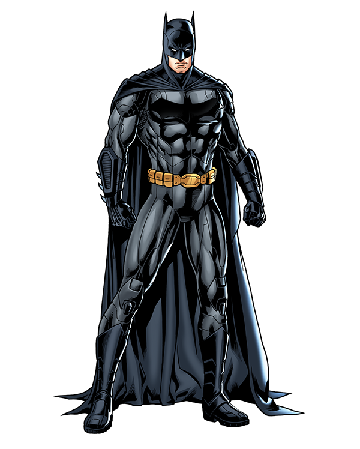

Criação do Batman
Batman é um icônico super-herói dos quadrinhos e um dos personagens mais populares
da DC Comics. Ele foi criado por Bob Kane e Bill Finger e fez sua primeira aparição
em Detective Comics #27, publicada em 1939. A criação do Batman foi uma resposta
à necessidade de um herói sombrio e misterioso que combatesse
o crime nas sombrias ruas de Gotham City.
O Personagem Batman
Batman, também conhecido como Bruce Wayne, é um bilionário empresário e filantropo que se
tornou um vigilante mascarado após testemunhar o assassinato de seus pais quando criança
Determinado a combater o crime e proteger Gotham City, ele treinou seu corpo e mente
para se tornar um mestre em artes marciais, detetive habilidoso e estrategista brilhante.
Utilizando sua vasta fortuna, Batman desenvolveu uma variedade de equipamentos e veículos tecnológicos
avançados para ajudá-lo em suas missões. Ele é conhecido por seu traje icônico, que inclui uma capa, máscara
e o distintivo símbolo do morcego no peito. Batman é conhecido por sua determinação implacável, inteligência
afiada e ética de trabalho incansável.
Quadrinhos Importantes do Batman
Batman tem uma longa e rica história nos quadrinhos, com várias histórias importantes que ajudaram a moldar
seu universo. Alguns desses quadrinhos se tornaram marcos significativos na mitologia do Batman. Aqui estão
alguns dos quadrinhos mais relevantes:
"Batman: Ano Um" (1987):
Nessa história escrita por Frank Miller e ilustrada por David Mazzucchelli, a origem do Batman é recontada,
mostrando seus primeiros dias como vigilante e sua luta contra a corrupção em Gotham City.
"Batman: O Cavaleiro das Trevas" (1986):
Escrito e ilustrado por Frank Miller, essa graphic novel mostra um Batman mais velho em um futuro distópico,
lutando contra o crime em uma Gotham City decadente.
"Batman: A Piada Mortal" (1988):
Escrito por Alan Moore e ilustrado por Brian Bolland, esse quadrinho explorou o relacionamento complexo
entre Batman e seu arqui-inimigo, o Coringa, em uma história sombria e impactante.
"Batman: Silêncio" (2002-2003):
Essa história escrita por Jeph Loeb e ilustrada por Jim Lee apresenta uma trama complexa envolvendo vários
vilões icônicos do Batman, enquanto ele tenta desvendar um mistério que afeta sua vida pessoal.
Adaptações em Outras Mídias
Além dos quadrinhos, Batman também se tornou uma presença marcante em várias adaptações para outras mídias.
Aqui estão algumas das mais notáveis:
Série de TV "Batman" (1966-1968):
Estrelada por Adam West como Batman e Burt Ward como Robin, essa série de TV foi uma adaptação colorida e
cheia de ação do Batman, conhecida pelo seu estilo camp e pela presença de vilões icônicos.
Filme "Batman" (1989):
Dirigido por Tim Burton e estrelado por Michael Keaton como Batman, esse filme trouxe uma atmosfera gótica e
sombria ao personagem, conquistando sucesso de bilheteria e estabelecendo um novo padrão para adaptações de
super-heróis no cinema.
Trilogia "Batman: O Cavaleiro das Trevas" (2005-2012):
Dirigida por Christopher Nolan e estrelada por Christian Bale como Batman, essa trilogia de filmes
apresentou uma abordagem mais realista e sombria do personagem, explorando temas complexos e ganhando
aclamação da crítica e do público.
Habilidades do Batman
O Batman é conhecido por suas habilidades excepcionais, que o tornam um dos super-heróis mais formidáveis e
temidos. Aqui estão algumas de suas principais habilidades:
Inteligência e estratégia:
Batman é um gênio intelectual, com habilidades de dedução e raciocínio rápido. Ele é um mestre estrategista,
capaz de elaborar planos complexos e antecipar os movimentos de seus inimigos.
Combate corpo a corpo:
Batman é um especialista em artes marciais e possui habilidades excepcionais de combate. Ele é proficiente
em várias disciplinas de luta, permitindo-lhe enfrentar adversários poderosos e derrotá-los em combate corpo
a corpo.
Artes marciais:
Além de sua habilidade geral em combate, Batman é um mestre em diversas formas de artes marciais, incluindo
Karatê, Jiu-Jitsu, Kung Fu e muitas outras. Essas técnicas de luta permitem que ele se adapte a diferentes
estilos de oponentes.
Detetive habilidoso:
Batman é considerado um dos maiores detetives do mundo. Ele possui habilidades investigativas avançadas,
sendo capaz de encontrar pistas, decifrar enigmas e resolver crimes complexos.
Equipamentos tecnológicos:
Batman usa uma variedade de gadgets e equipamentos tecnológicos em suas missões. Ele tem acesso a uma ampla
gama de dispositivos, incluindo o Batmóvel, Batwing, Batarangues, cinto de utilidades e muitos outros
recursos avançados.
Resistência física e treinamento intensivo:
Batman passou por um treinamento rigoroso e intenso para aprimorar suas habilidades físicas. Ele possui uma
resistência excepcional, agilidade, reflexos rápidos e força aprimorada, permitindo que ele supere desafios
físicos extremos.
Disfarces e habilidades de infiltração:
Batman é um mestre do disfarce e da infiltração. Ele pode se infiltrar em locais de alta segurança,
manipular e enganar seus inimigos, além de se adaptar a diferentes identidades para cumprir suas missões.
Preparação:
Uma das maiores habilidades do Batman é sua capacidade de se preparar para qualquer situação. Ele estuda
meticulosamente seus inimigos, desenvolve contramedidas e tem planos de contingência para diversas
situações, garantindo que esteja sempre pronto para enfrentar qualquer desafio.
Essas são apenas algumas das muitas habilidades extraordinárias do Batman, que o tornam um dos super-heróis
mais icônicos e admirados nos quadrinhos e na cultura pop.